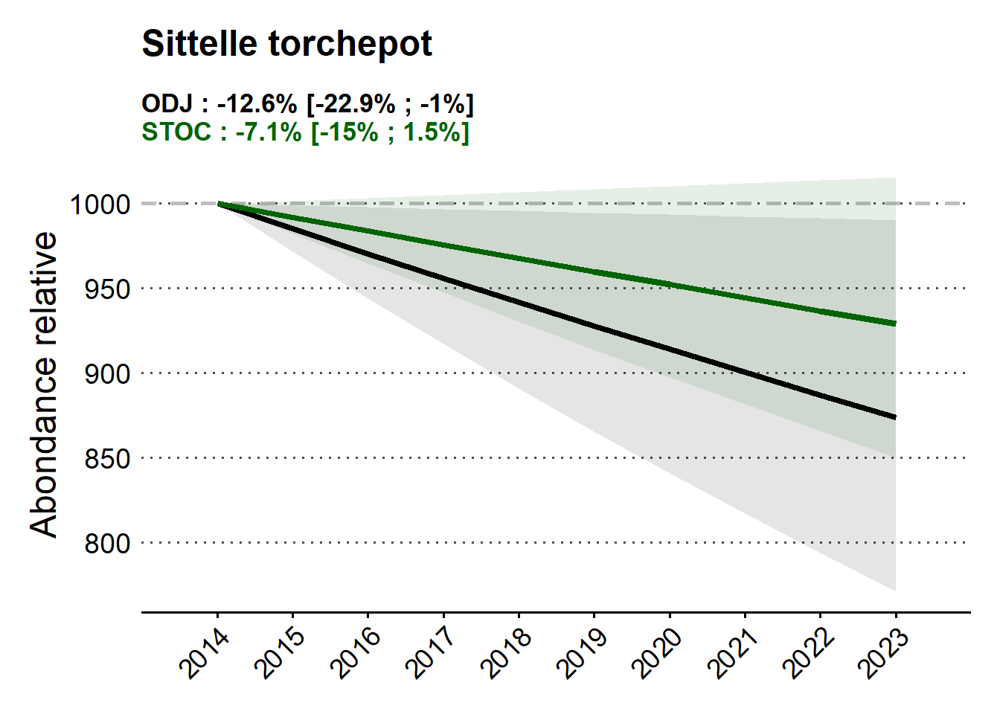

Bilan ODJ 2025 : comparaison STOC & SHOC
Contenu
Tendances ODJ et comparaison avec les observatoires STOC et SHOC
Description du projet de comparaison du ODJ avec STOC et SHOC
Texte V1 :
Grâce aux observations régulières récoltées dans le cadre d’Oiseaux des Jardins, nous pouvons aujourd’hui comparer les données issues des jardins celles d’autres suivis de sciences participatives menés par des ornithologues confirmés. Cette comparaison apporte des enseignements précieux sur la manière dont évoluent les populations d’oiseaux en France.
En confrontant les données de l’Observatoire ODJ avec deux autres grands protocoles scientifiques depuis il y a plus d’une décennie - le Suivi Temporel des Oiseaux Communs (STOC) au printemps et Suivi Hivernal des Oiseaux Communs (SHOC) en hiver - , nous avons cherché à savoir si les tendances observées par le grand public dans les jardins reflètent bien celles constatées par les spécialistes sur le terrain.
Ce travail préliminaire a été mené de front par Marion Goascoz lors de stage de fin d’étude en 2025 (Master 2 Bidiversité-Ecologie-Evolution BEE, Sorbonne Université, Université Paris-Saclay, Muséum National d’Histoire Naturelle MNHN), co-encadrée par Charles Thévenin (CESCO, MNHN), Suzanne Bonamour (LPO France) et Benoit Fontaine (CESCO, MNHN, OFB).
Les résultats sont très encourageants (bien qu’encore à préciser sur le plus long terme) : dans de nombreux cas, vos observations aboutissent à des tendances similaires sur les mêmes périodes d’étude, ce qui montre la grande valeur scientifique de l’Observatoire ODJ bien qu’alimenté par des Ornithologues pour la plupart débutants.
Bien sûr, certaines différences apparaissent. En hiver par exemple, la présence de mangeoires attire davantage d’oiseaux dans les jardins, ce qui peut expliquer des écarts avec le suivi SHOC. De même, les habitats étudiés ne sont pas toujours les mêmes : les protocoles d’experts couvrent souvent des zones rurales ou naturelles, tandis qu’ODJ reflète les dynamiques de populations des oiseaux en jardin, et donc en milieu urbain ou périurbain. Ces différences sont intéressantes, car elles permettent de mieux comprendre comment les oiseaux s’adaptent à des environnements variés.
Ce travail confirme que vos comptages ne sont pas seulement utiles localement : ils s’intègrent dans un ensemble plus large et apportent une pièce essentielle au puzzle de la biodiversité. Sans la collecte massive de données pour l’Observatoire des oiseaux des jardins, les chercheurs n’auraient pas accès à cette richesse d’informations, ce qui est particulièrement vrai dans les jardins privés.
En somme, les observations ODJ complètent et enrichissent celles des experts. Ensemble, elles permettent d’obtenir une vision plus fine et plus complète de la dynamique des populations d’oiseaux en France, indispensable pour leur suivi et leur protection.
texte v2 raccoucie :
Grâce à vos observations régulières dans le cadre d’Oiseaux des Jardins, nous avons pu comparer ces données à celles issues de suivis menés par des ornithologues confirmés. Cette comparaison apporte des enseignements précieux sur l’évolution des populations d’oiseaux en France.
Le travail, réalisé en 2025 par Marion Goascoz (Master 2 BEE, Sorbonne Université, Université Paris-Saclay, MNHN) avec l’appui de la LPO et du CESCO, a confronté ODJ à deux grands protocoles scientifiques : le STOC (printemps) et le SHOC (hiver). Les résultats sont très encourageants : dans de nombreux cas, vos observations aboutissent à des tendances similaires à celles des spécialistes, confirmant la grande valeur scientifique d’ODJ, même si la majorité des participants sont des débutants.
Certaines différences existent, notamment en hiver où les mangeoires attirent davantage d’oiseaux, ou parce que les habitats étudiés diffèrent (zones naturelles pour STOC/SHOC, jardins urbains pour ODJ). Mais loin d’être des limites, ces contrastes permettent de mieux comprendre comment les oiseaux s’adaptent à des environnements variés.
Vos comptages ne sont donc pas seulement utiles à l’échelle de votre jardin : ils complètent et enrichissent les suivis des experts, offrant ensemble une vision plus complète des dynamiques d’oiseaux en France, essentielle pour leur protection.
Pour inspiration :
Résumé Marion :
“Ce mémoire compare les tendances temporelles d’abondance d’oiseaux communs issues de trois protocoles de sciences participatives : STOC, SHOC (naturalistes) et ODJ (grand public). L’objectif est d’évaluer la cohérence des tendances entre ces programmes, bien que leurs approches méthodologiques et leur public diffèrent. Les résultats montrent qu’environ la moitié des tendances estimées sont similaires entre ODJ et SHOC (hiver), mais moins nombreuses avec le STOC (printemps). Les différences peuvent s’expliquer par des biais d’échantillonnage, l’écologie des espèces (ex. présence de mangeoires) et le niveau d’expertise des observateurs. Notre étude suggère que les données du protocole ODJ, malgré leurs limites, sont utiles pour suivre les dynamiques de populations urbaines. Des améliorations méthodologiques sont proposées pour affiner l’interprétation de ces tendances divergentes.”
Intro Marion :
“Au cours des 300 dernières années, les extinctions recensées pour certains groupes d’organismes révèlent des taux d’extinction au moins plusieurs centaines de fois supérieurs à ceux attendus d’après les archives géologiques [1]. Des suivis à grande échelle sont donc essentiels afin de mesurer les dynamiques des populations et déterminer comment la biodiversité est impactée par les divers changements globaux. En France, l’abondance globale des oiseaux a diminué de 33 % entre 1989 et 2017 (voir les résultats du bilan du Suivi Temporel des Oiseaux Communs, coordonné par le CESCO et l’UMS Patrinat, 2018). Les oiseaux sont de bons indicateurs de biodiversité : ils disposent d’une large répartition, de comportement et d’écologie bien connue [2,3]. En réponse aux changements globaux, des effets sur leurs populations sont d’ores et déjà visibles avec des modifications de leur répartition et de leur phénologie [2,3]. Chez plusieurs espèces d’oiseaux cela provoque des changements significatifs dans la composition de leurs communautés avec des populations en déclin et augmentation [4]. Les oiseaux sont également situés à des niveaux trophiques élevés, leurs tendances démographiques peuvent donc souvent refléter celles d’autres taxons [2]. L’observation des oiseaux étant très populaire auprès du grand public, les projets de suivi des oiseaux comptent parmi les plus réussis en matière de sciences participatives [5].
Les sciences participatives sont une approche de plus en plus reconnue et appliquée dans de nombreux domaines scientifiques [6]. Particulièrement dans les sciences environnementales et écologiques, où des participants non professionnels contribuent à la collecte de données pour faire avancer la recherche scientifique [6]. Par exemple, les sciences participatives axées sur le suivi des espèces ont fourni au moins 50 % des observations aux bases de données internationales sur la biodiversité, telles que le Global Biodiversity Information Facility (GBIF) [6]. En effet, les données d’occurrence et d’abondance sont difficiles à collecter à large échelle spatiale et sur le long terme ; avoir recours aux sciences participatives est donc un avantage certain en termes de protocole d’échantillonnage et de coûts [4]. De plus, avoir recours aux sciences participatives permet parfois d’avoir accès à des milieux peu accessibles par les scientifiques. Les sciences participatives en sciences écologiques peuvent avoir pour objectif de documenter l’état de santé des populations naturelles, contribuant ainsi aux listes rouges UICN [7], ce qui permet d’orienter quant aux futures actions de conservation [8]. Cependant les sciences participatives présentent plusieurs limites, notamment le maintien de l’engagement des participants et les biais liés à la récolte des données [6,9]. Un biais important concerne la qualité des données collectées par les citoyen.ne.s incluant la variabilité des niveaux de compétence parmi les volontaires et la sous-déclaration des résultats négatifs [5,9]. Un autre type de biais, relatif à l’échantillonnage, est lié à la densité de population : les zones plus densément peuplées ont tendance à être prospectées plus fréquemment [6].
En France, plusieurs programmes de sciences participatives existent tel que le Suivi Temporel des Oiseaux Communs (STOC). Ce suivi constitue le plus ancien protocole scientifique français établi en 1989 afin d’évaluer l’état des populations d’oiseaux communs nicheurs par la production de tendances spécifiques [7]. Depuis le début, le nombre de participants a augmenté chaque année de 0.55% en moyenne. Le pourcentage des participants qui n’a envoyé des données que pendant une seule année est de 0 % puisque les sites suivis une seule année sont retirés, 17% pendant deux ans, et 83% pendant plus de deux ans. En 2006 a débuté un autre protocole, le Suivi Hivernal des Oiseaux Communs (SHOC) afin d’étudier la dynamique des populations hivernantes en France [10]. Depuis le début, le nombre de participants a augmenté chaque année de 2 %. Le pourcentage de participants qui n’a envoyé des données que pendant une seule année est de 5.2 %, de 33.1% pendant deux ans, et 61.6 % pendant plus de deux ans. La finalité des protocoles STOC et SHOC est de permettre d’analyser les tendances d’abondances des espèces, à savoir le nombre d’individus comptés au cours du temps [2]. On s’intéresse à travers ces protocoles aux abondances relatives et leur évolution temporelle, et non aux abondances absolues des populations [7].
En Europe, les oiseaux migrateurs à courte distance et les sédentaires sont contraints de trouver leurs ressources dans des paysages dominés par l’activité humaine, tels que les zones urbaines et les paysages agricoles intensifs [10]. En hiver, les mangeoires de jardin peuvent fournir une quantité non négligeable de nourriture supplémentaire, principalement des graines [10]. Les jardins privés représentent une proportion importante des espaces verts en milieu urbain [11]. Toutefois, l’accès à ces jardins à grande échelle à des fins de recherche est difficile, car ils sont privés. Rassembler des personnes pour suivre les oiseaux dans leur jardin (c’est-à-dire via les sciences participatives) constitue donc une bonne manière de surmonter ce problème [10]. D’autant plus qu’au cours du dernier siècle on a pu observer une augmentation rapide du rythme de l’urbanisation dans de nombreux pays [12]. Il a notamment été démontré que les populations urbaines d’oiseaux tendent à avoir des densités de population plus élevées [13,14]. En revanche, les tendances des populations d’oiseaux sont significativement plus négatives en milieu urbain que dans d’autres habitats [15]. Cependant, les zones urbaines évoluent rapidement et par conséquent, des fluctuations de l’abondance des populations d’oiseaux urbains sont susceptibles de se produire [13].
L’Observatoire participatif “Oiseaux Des Jardins” (ODJ) est un programme de sciences participatives co-géré par la Ligue pour la Protection des Oiseaux (LPO) et le Muséum National d’Histoire Naturelle (MNHN, Paris), ayant commencé au printemps 2012. L’objectif de ce programme grand public est d’enregistrer l’abondance des espèces dans les jardins privés et publics tout au long de l’année, à l’échelle nationale. On comptabilise au total 48 espèces visées par l’observatoire ODJ, dont une uniquement observée l’hiver, le pinson du nord, et quatre à partir du printemps à savoir l’hirondelle rustique, l’hirondelle de fenêtre, le martinet noir et la huppe fasciée. A ce jour, 85 231 participants ont transmis des données au moins une fois, couvrant l’ensemble du territoire (Figure 2). Depuis le début, le nombre de participants a augmenté chaque année de 1.28 % en moyenne. La majorité des participants n’a envoyé des données que pendant une seule année soit 67.6%, 14.6 % pendant deux ans, et 17.8% pendant plus de deux ans. ODJ demeure le programme de science participative du MNHN comptabilisant le taux de fidélisation et de recrutement le plus élevé [2], ce qui en fait donc un des programmes possédant la plus grande base de données.
A ce jour, on estime que plus de 70% des chercheurs ne réussissent pas à reproduire les expériences d’autres scientifiques et plus de la moitié échouent à reproduire leurs propres expériences [16]. Il est donc primordial de vérifier si les tendances spécifiques estimées de nos populations d’oiseaux via le STOC et le SHOC sont corroborées par les données d’autres protocoles nationaux comme ODJ. De plus, les tendances pour une même espèce peuvent différer selon les saisons. En effet, pour des espèces migratrices, les protocoles d’échantillonnage en hiver viseront des populations d’individus en migration hivernale tandis que les protocoles de printemps recueilleront des données sur des individus résidents et se reproduisant sur le territoire. Sur ce point, les protocoles ODJ printemps/STOC ainsi qu’ODJ hiver/SHOC échantillonnent des populations semblables. A la différence des protocoles STOC et SHOC qui reposent sur les observations d’ornithologues confirmés, le programme ODJ fait appel majoritairement à des néophytes. A cela s’ajoute le biais géographique d’échantillonnage plus concentré dans les jardins de zones urbaines pour le protocole ODJ. Comparer les tendances selon la même méthode d’estimation des tendances suivant différents protocoles et observateurs devrait confirmer les estimations établies. On souhaite donc savoir si l’on observe des différences dans les tendances temporelles d’abondance, calculées selon la même méthode, à partir de différents protocoles de suivi. On suppose que malgré la différence de niveau des participants et le biais géographique que la majorité des tendances estimées seront similaires. En effet, ces tendances seront déterminées suivant la même méthode pour les différents protocoles et sur des périodes d’échantillonnage semblable, donc les tendances devraient être majoritairement équivalentes. En revanche, on pourrait s’attendre à observer davantage de différence dans les tendances estimées en hiver où la présence de mangeoire et de nourriture croissante (achat de graines en augmentation sur le site LPO) dans les jardins constitue un effet attracteur important qu’on ne retrouvera pas dans les milieux échantillonnés par le SHOC. En partie pour cette raison, les tendances spécifiques sont susceptibles de varier entre les saisons hivernale et printanière mais également dû à une détection plus faible en hiver.”
Données
Listes des espèces comparées
ODJ-STOC
Nombre d’espèce pour lesquelles il est possible de compararer les tendances temporelles entre les observatoires ODJ et STOC (sans comparaison intercertaine) : 31
Listes des espèces comparées :
ODJ-SHOC
Nombre d’espèce pour lesquelles il est possible de compararer les tendances temporelles entre les observatoires ODJ et SHOC (sans comparaison intercertaine) : 33
Listes des espèces comparées :
Comparaison des tendances
!!! ODJ-STOC
Expliquer qu’il y a tant d’espèces avec des patterns différents et tant d’esp pour lesquelles on peut faire des comparaisons.
Figure à l’appui : camembert hiver/été avec tendances opposées et similaires (dans similaire mettre les tendances identiques et les tendances différentes ie stable versus déclin ou augmentation – ne pas expliquer cela au grand public).
!!! ODJ-SHOC
Expliquer qu’il y a tant d’espèces avec des patterns différents et tant d’esp pour lesquelles on peut faire des comparaisons.
Figure à l’appui : camembert hiver/été avec tendances opposées et similaires (dans similaire mettre les tendances identiques et les tendances différentes ie stable versus déclin ou augmentation – ne pas expliquer cela au grand public).
Nombre d’espèces en déclin/augmentation/stable
ODJ

ODJ-STOC
ODJ-SHOC

Interprétation des résultats
!!! ODJ-STOC
Bien préciser que cela ouvre de nouvelles pistes d’analyse et de suivi. On illustre cela avec quelques exemples (texte)
Bien mettre en avant que le pourcentage d’opposé est plus faible que le similaire (texte)
!!! ODJ-SHOC
Bien préciser que cela ouvre de nouvelles pistes d’analyse et de suivi. On illustre cela avec quelques exemples (texte)
Bien mettre en avant que le pourcentage d’opposé est plus faible que le similaire (texte)
Exemple d’espèce à mettre en avant
ATTENTION : penser à bien revérifier les tendances du STOC et SHOC qui seront publiées dans le rapport qui sortira à l’automne
Verdier d’Europe
ODJ-STOC
Tendance similaire

# A tibble: 2 × 12
species Protocole minYear maxYear estimate pval infIC supIC perc
<chr> <chr> <dbl> <dbl> <dbl> <dbl> <dbl> <dbl> <chr>
1 Verdier d'E… STOC 2014 2023 -0.0424 1.59e-20 -0.0514 -0.0335 -31.…
2 Verdier d'E… ODJ 2014 2023 -0.0285 6.64e- 6 -0.0408 -0.0161 -22.…
# ℹ 3 more variables: infPerc <chr>, supPerc <chr>, tendance_bilan <fct># A tibble: 2 × 12
species Protocole minYear maxYear estimate pval infIC supIC perc infPerc
<chr> <chr> <chr> <chr> <chr> <chr> <chr> <chr> <chr> <chr>
1 Verdier d'… STOC 2014 2023 -0.0424… 1.59… -0.0… -0.0… -31.… -37
2 Verdier d'… ODJ 2014 2023 -0.0284… 6.64… -0.0… -0.0… -22.… -30.80
# ℹ 2 more variables: supPerc <chr>, tendance_bilan <chr>
ODJ-SHOC
Tendance similaire

V2 from routine

Sittelle torchepot
différence pour hiver avec explications
ODJ-STOC
Tendance similaire

ODJ-SHOC
Tendance similaire


Grosbec casse noyaux
tendances opposées

Rougegorge
tendances similaires été et hiver

Mésange bleue
tendances similaires

Pinson des arbres
tendances similaires